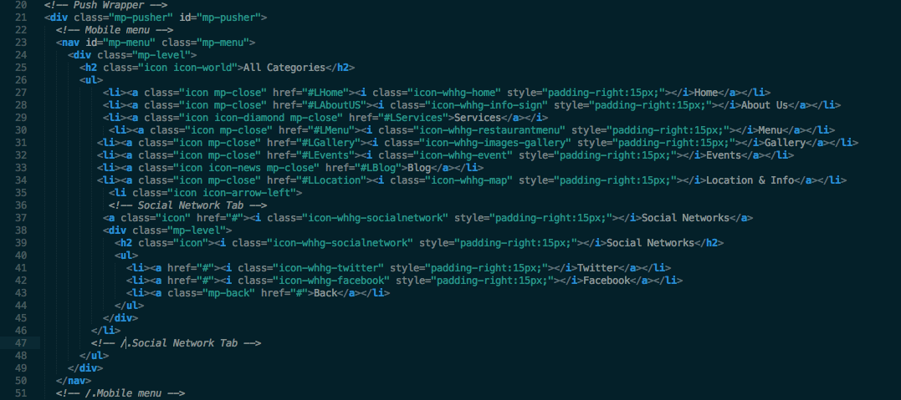
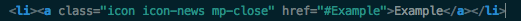
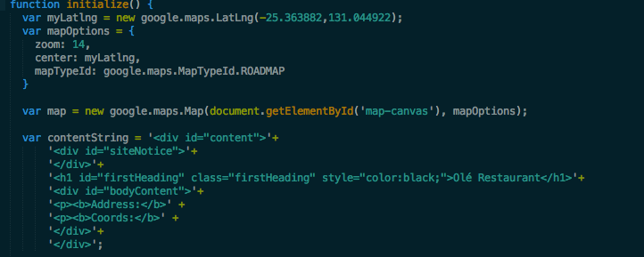

Created: 13/10/2012
By: Jose Antonio Gonzalez Robles
Email: pinguisl@yahoo.es
Thank you for purchasing my theme. If you have any questions that are beyond the scope of this help file, please feel free to email via my user page contact form here. Thanks you so much!
To edit the Mobile menu, you have to go to this lines
If you want to add a New Tab just write:
You can add it between Mobile Menu and Social Networks tag or just under Social Network tag. You can add another submenu just by coping the text between Social Networks Tag. To choose icon just change the class "icon-whhg-twitter". You can find out here
To change the desktop menu just edit the content between Menu lines. If you want to create another link just duplicate one of them.
Home: To chage the title and the description do the next:
Title: change text between "data-title" tag
Description: change text between "data-description" tag (text shouldn't be too long)
About Us: To change the description , change the text between "p" tags
Services: Change text between "data-title" tag
Menu: Same that previous models just change data-title and data-price you can create as many as you want
Blog: Just go to js/main.js and edit line 13 changing the url showed to yours. It's a RSS Feed
Events:Same that previous models just change data-day and data-month you can create as many as you want
Location & Info: Edit the lines. Then go to js/maps.js and edit
Change LatLng(); to your direction, you can customize the zoom too. and below this you can change the text showed when you click on the landmark.
All CSS are in css folder. I will explain you the functionality of each one
Style.css: Main CSS file.
menu.css: Style for mobile menu
normalize.css: Some lines to do the theme look beautiful
whhg.css bootstrap-glyphicons.css and icons.css: used to load icons from fonts library.
carousel.css : carousel style
feed.css : Feed style
If you want to edit some of those files, you can do it just by read the tags
Jose Antonio Gonzalez Robles